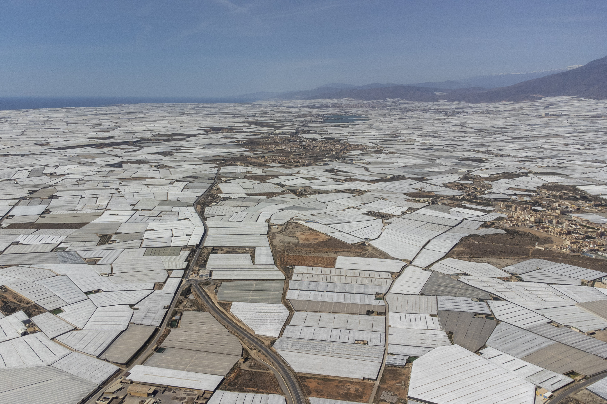
1 / 17
Over 32,000 hectares of plastic covered greenhouses cover the land around El Ejido in Almería, Spain. The area is so vast that it is clearly visible from Space.
2 / 17
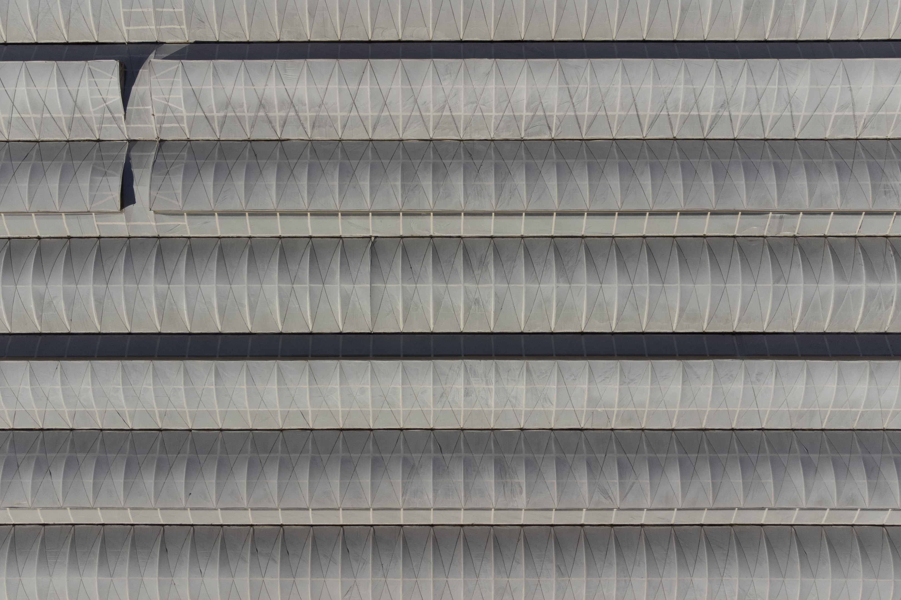
This is some of the most productive agricultural land in the world. The plastic stabilises the soil humidity, reducing wind erosion and raising winter temperatures, allowing crops to be grown all year.
3 / 17
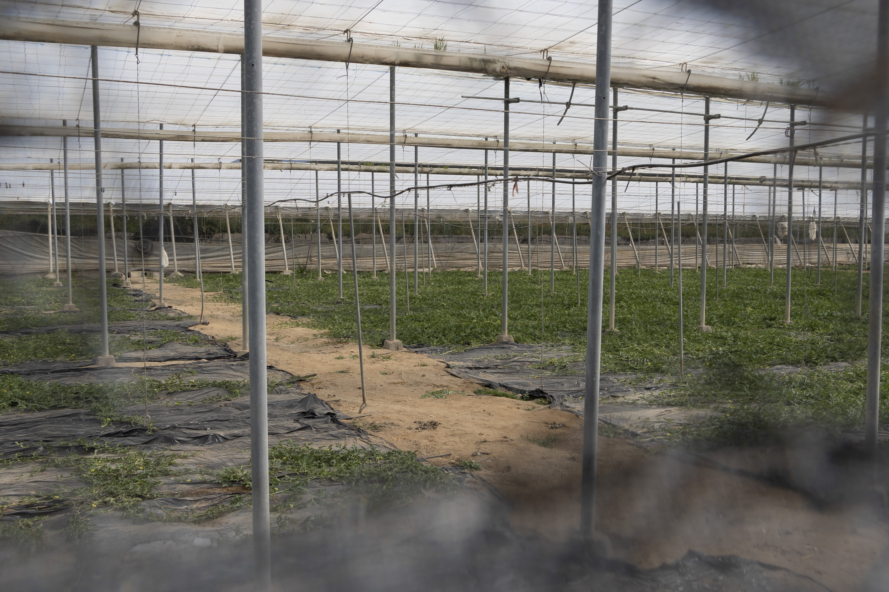
The greenhouses around Almería produce over 3.5 million tonnes of fruit and vegetables a year.
4 / 17
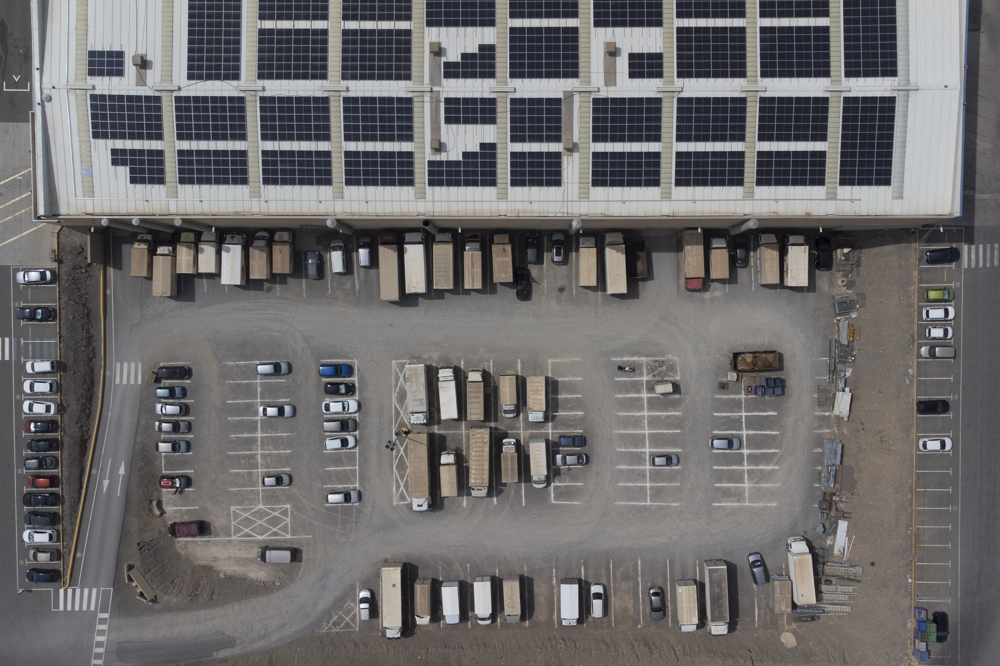
Around 80% of the crops produced are destined for export to other European countries - because of the high productivity and warm temperatures in winter, Almería supports much of Europe's demand for winter fruit and vegetables.
5 / 17
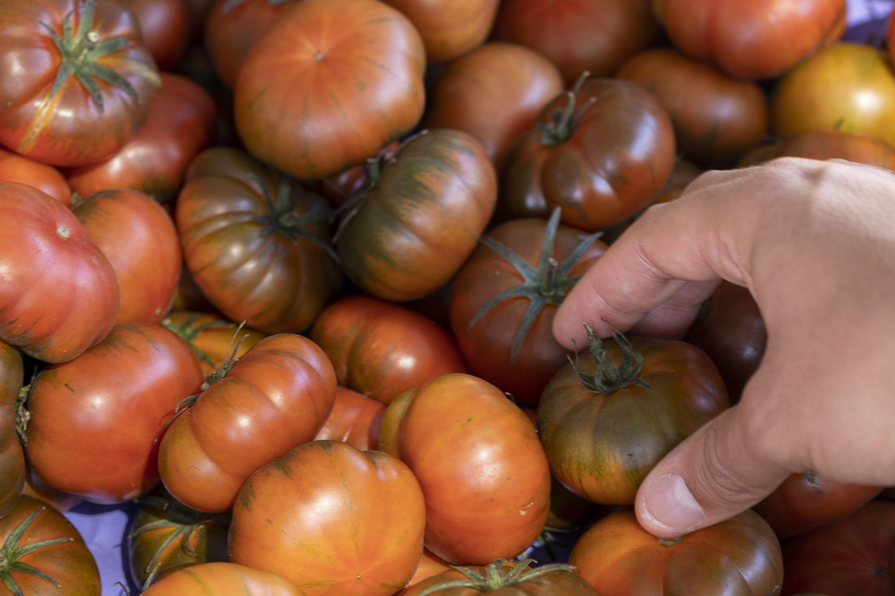
The fragility of this supply chain was highlighted early in 2023 when unseasonable weather reduced yields by around 20%. In combination with trade problems, this meant empty shelves and rationing in the UK.
6 / 17

The intensive nature of the greenhouse agriculture causes substantial environmental problems.
7 / 17
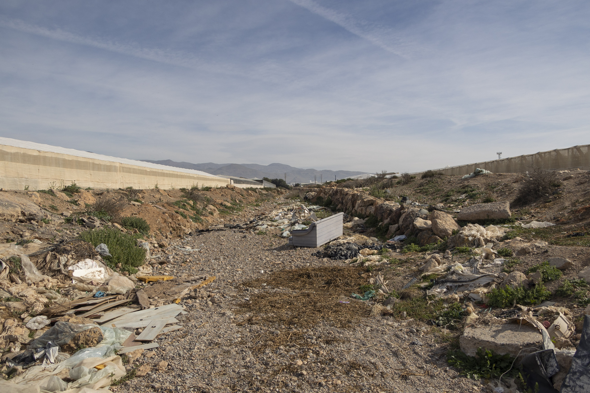
Over 3,500 tonnes of plastic is discarded annually, clogging rivers, killing wildlife, and releasing microplastics into the sea.
8 / 17
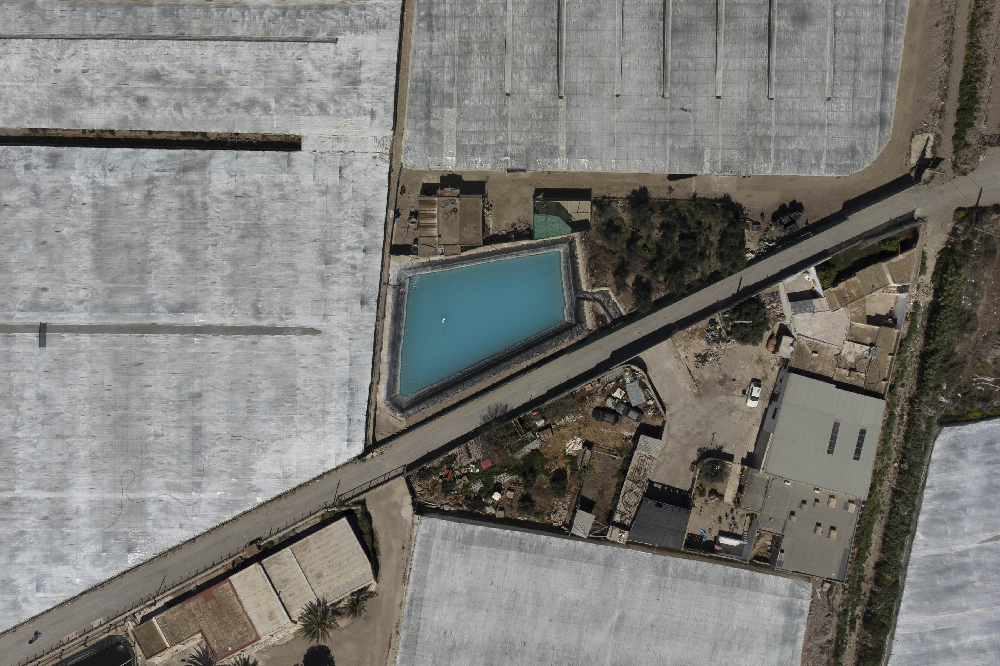
Levels of rain are so low here that water must be pumped up from aquifers deep below the surface, and stored in ponds that are often bleached to prevent algal growth.
9 / 17

The large volumes of fertilisers and pesticides used in the greenhouses seep down into the groundwater, polluting drinking water and nearby lakes.
10 / 17
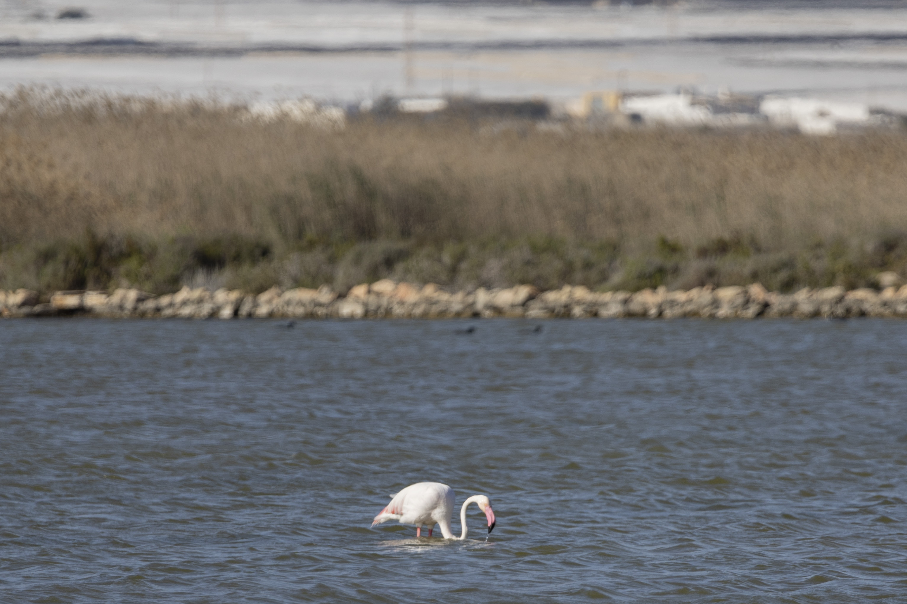
As the area of greenhouses continues to increase, local habitats are lost.
11 / 17
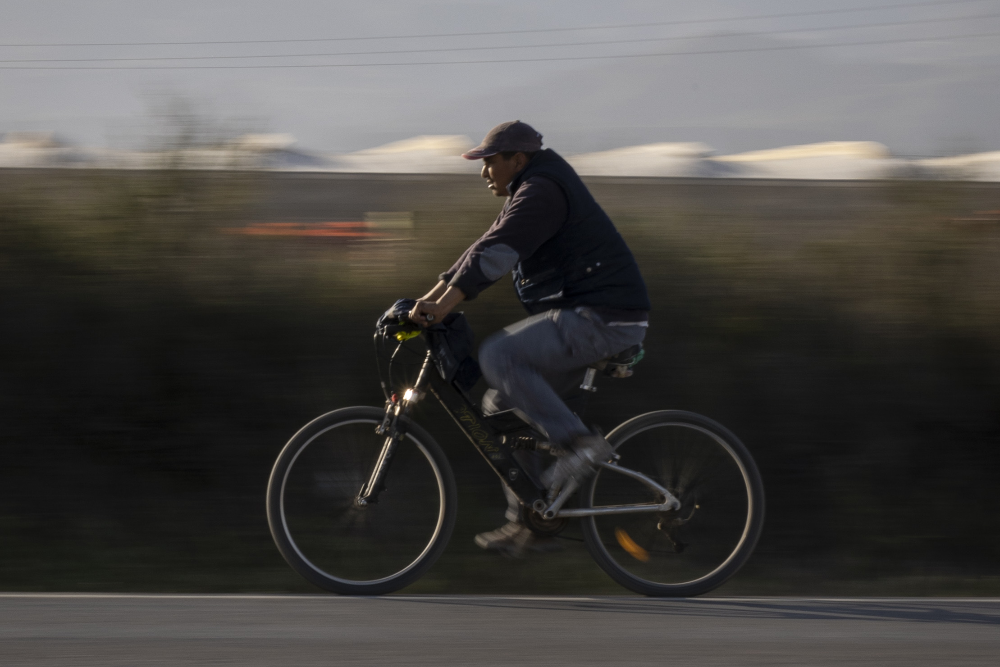
The greenhouses depend upon a vast migrant workforce, many of whom are undocumented.
12 / 17
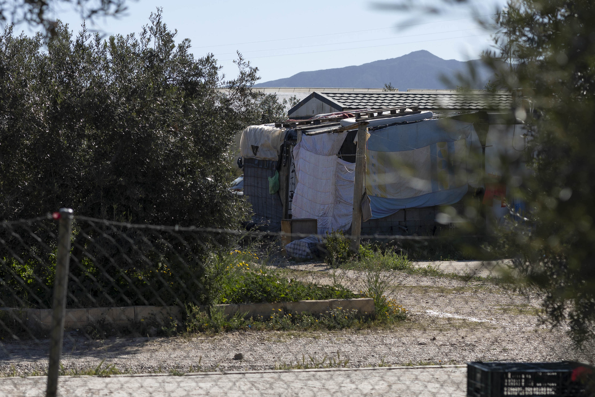
Migrants' homes are often not obvious - many live on private land where they also work.
13 / 17
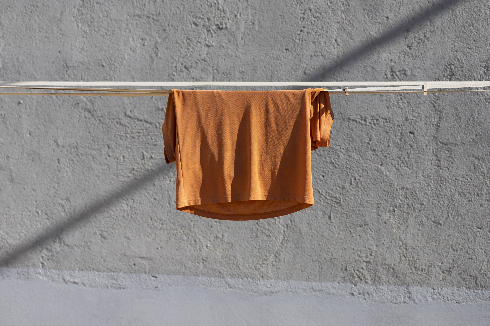
Drying clothes are often the only sign that the rudimentary dwellings are inhabited.
14 / 17

Up to 120,000 labourers work in the greenhouses, many of them undocumented migrants. They live across more than 60 informal settlements, called 'chabolas'.
15 / 17
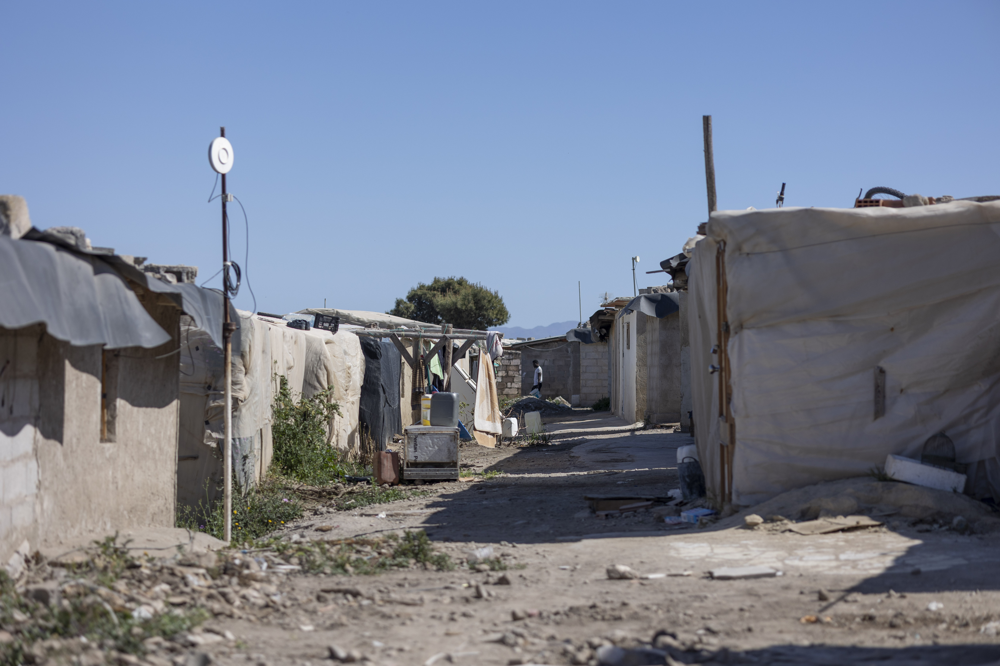
Here, conditions are incredibly tough, with no running water or toilets, improvised electricity, and often dangerously stored cooking gas.
16 / 17
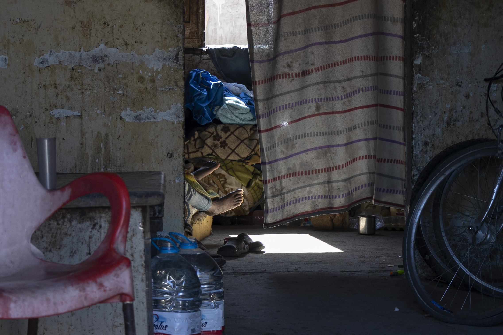
Many migrants are stranded when they grow old or fall ill. Many have health problems caused by the harsh and often dangerous working conditions. Mental health problems and addiction are common.
17 / 17

Our globalised supply chains have far-reaching impacts. How can we reduce these impacts? What could the future of our food systems look like?